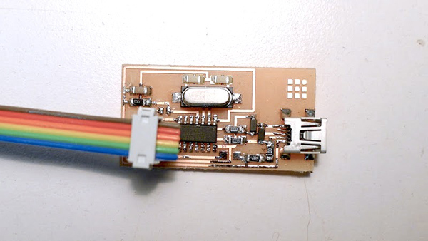
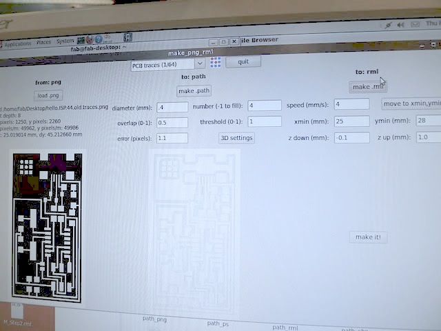
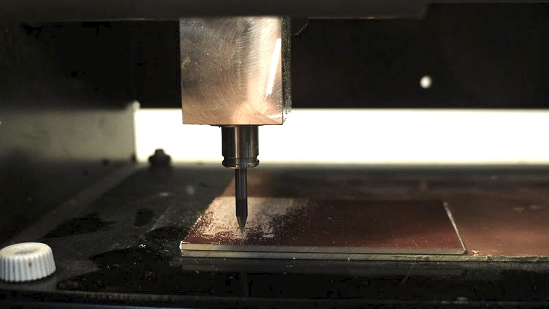
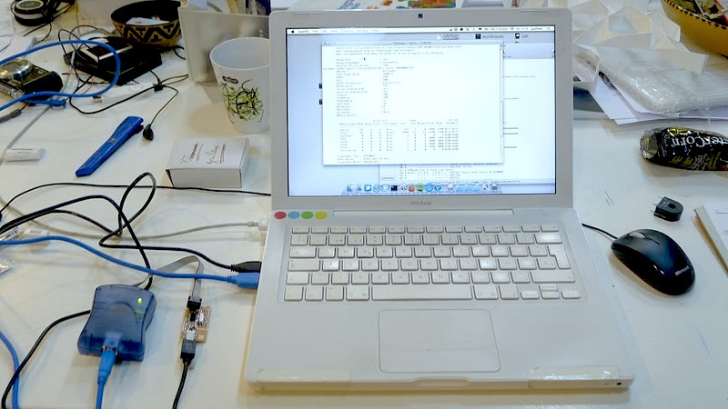
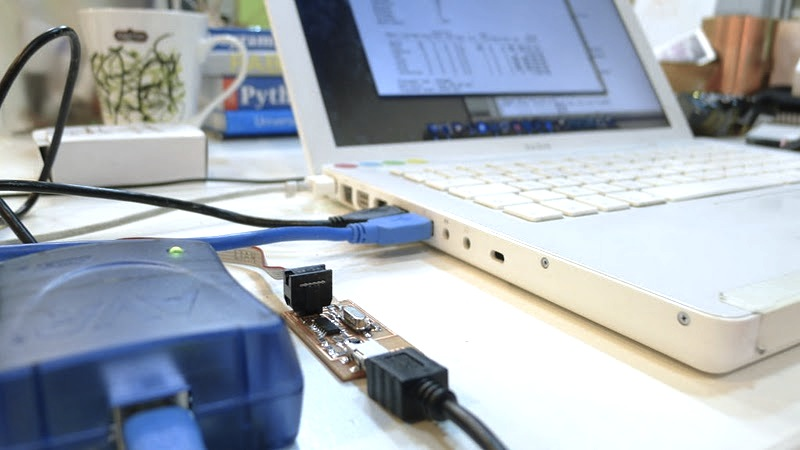
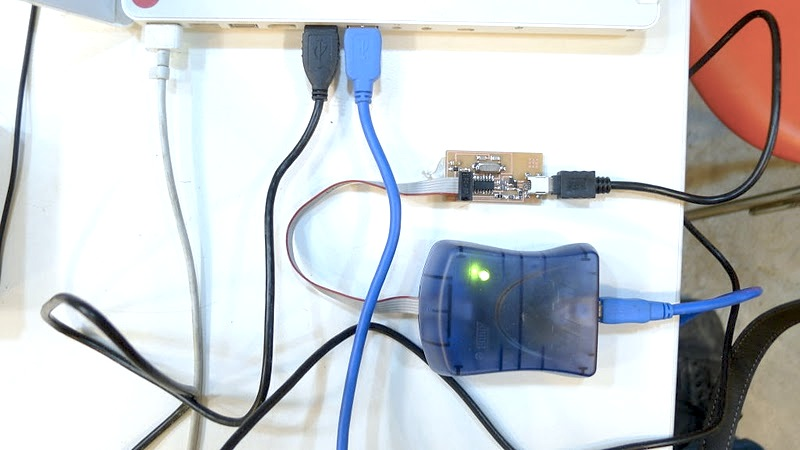
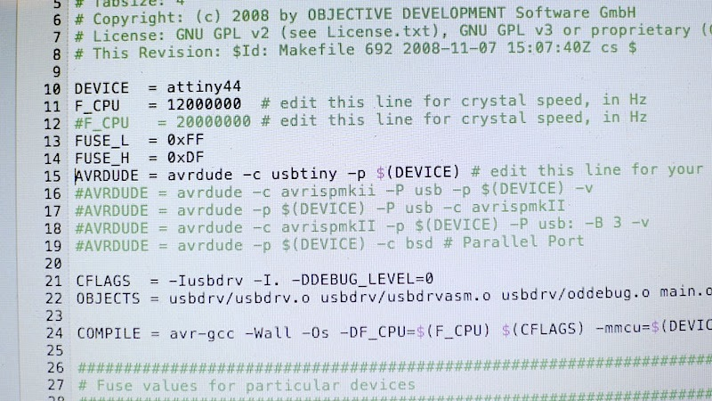
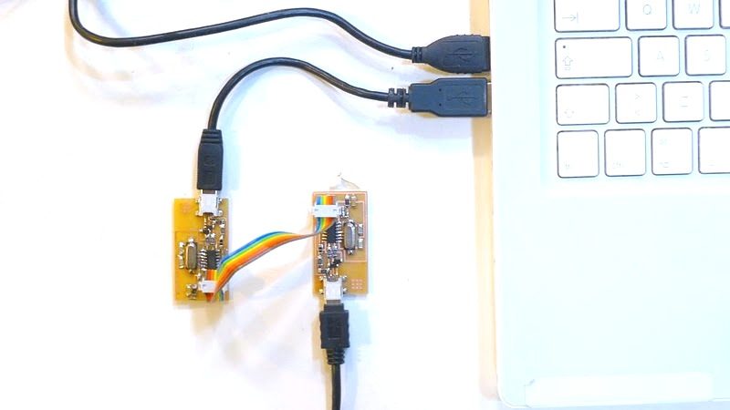
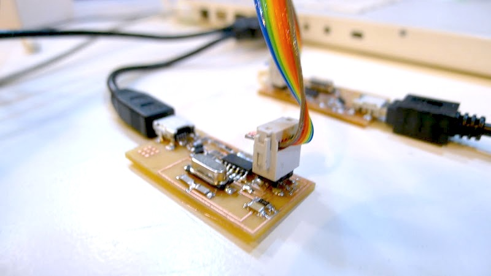

For the electronics production assigment we built an in-circuit programmer (ISP) based on the USBtiny and V-USB firmwares, the FabISP.
My Fab Isp
I did two FAB-ISP old version boards because the first seems not to work. Finally I found there was a problem in the ATtiny44 because it wasn't solder properly and some contacts were missing.
Production Process: Pcb Cam
CAM using the NEW fab modules. Fab modules has presets already saved for manufacturing PCB's that makes the CAM workflow faster than with the old cad.py.
Manufacturing process using the Roland Modela MDX-20 and 1/64 (engraving) + 1/32 (cutting) endmills. The same work can be done using a Mantis DIY machine.
Production Process: Microcontroller Programing
I had a little bit of trouble with the fuses but finally I fix it and it works!
For programing you need AVRDUDE and the AVRGCC compiler, on Mac you can just setup the ARV CrossPACK. For those who don't like the shell you can try AVR Fuses for MAC or the AVR Studio for WIN
Makefile changes:
We did the old FAB ISP version because we just had the 12Mhz Crystal so:
F_CPU = 12000000 # edit this line for crystal speed, in Hz
We use a comercial AVR MKII ISP so we had to define it at the makefile programmer list and comment the rest:
AVRDUDE = avrdude -c avrispmkii -P usb -p $(DEVICE) -v
A full list with diferent ISP options you can use (uncomment the one you want to use):
# AVRDUDE = avrdude -c usbtiny -p $(DEVICE) # USB tiny based devices (like the FAB ISP)
# AVRDUDE = avrdude -c avrispmkii -P usb -p $(DEVICE) # AVR MKII off-the-shelf ISP (around $30 aprox)
# AVRDUDE = avrdude -p $(DEVICE) -c bsd # Parallel Port DB25M ISP check the wiring here: http://fab.cba.mit.edu/about/fab/
# AVRDUDE = avrdude -p $(DEVICE) -c dasa # Serial Port DASA ISP check the wiring here: http://fab.cba.mit.edu/about/fab/
In your shell pointing to your Firmware folder type:
$ make clean # Clean the old compiled HEX files
$ make hex # Compile the C code using GCC and create the .hex file
$ avr-gcc -Wall -Os -DF_CPU=12000000 -Iusbdrv -I -mmcu=attiny44 # That's what the commant $ make hex does, avr-gcc is the C compiler.
$ make program # Burn the fuses and flash the program (load the .hex) to your Fab ISP
$ avrdude -c usbtiny -p attiny44 -U hfuse:w:0xDF:m -U lfuse:w:0xFF:m # That's what the commant $ make program does first, it burns the fuses on to the micro.
$ avrdude -c usbtiny -p attiny44 -U flash:w:main.hex:i # That's what the commant $ make program does after, it flash the program (hex file) on to the micro.
Remember to plug the USB to you FAB ISP to power it, close both jumpers (J1 and J2) and rember the pins to be right MOSI > MOSI etc…
  PRODUCTION PROCESS: TESTING
Test your ISP programing another FAB ISP or any board. For example you can burn the bootloader of an Arduino by plug-in your ISP to its ISP plug and choosing Board>Burn Bootloader>USB tiny on the Arduino IDE. You can burn new ATMEGA compatible chips and build your own Arduinos!
  